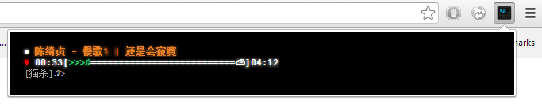

FM Terminal
命令行风格豆瓣电台Chrome插件。
Geek风，无广告。
v2.0 变更列表
- 音量控制命令（静音，音量+/-，设置音量值）
- Tab自动完成命令
- 美化频道列表
- 优化资源占用
- 修复bug
v1.0 功能
- 播放豆瓣电台音乐，登陆、红心、不再播放
- Chrome开发者工具、Popup终端
- 屏蔽广告
安装
- 下载插件fm-terminal
- 打开Chrome插件设置页面
- 拖放下载的文件到插件设置页面中
- 确定安装

使用
- 点击Douban.fm CMD图标（默认快捷键Alt+M），或，打开开发者工具（快捷键F12）->切换到CatX.FM页
- 输入命令，回车
支持的命令：
| 命令 | 参数 | 描述 | 示例 |
|---|---|---|---|
| help | 无 | 显示命令列表 | 懒得举例了 |
| login | 无 | 登陆豆瓣电台。根据提示输入email地址、密码以及是否记住登陆 | 懒得举例了 |
| logout | 无 | 登出豆瓣电台 | 懒得举例了 |
| channel | 无 | 显示频道列表 | 懒得举例了 |
| play | 频道编号 | 播放指定编号的频道 | play 0 |
| stop | 无 | 停止播放 | 懒得举例了 |
| pause | 无 | 暂停播放 | 懒得举例了 |
| resume | 无 | 恢复播放 | 懒得举例了 |
| loop | 无 | 单曲循环 | 懒得举例了 |
| next | 无 | 下一首 | 懒得举例了 |
| prev | 无 | 上一首 | 懒得举例了 |
| boo | 无 | 不再播放（需要登陆） | 懒得举例了 |
| like | 无 | 加红心（需要登陆） | 懒得举例了 |
| unlike | 无 | 去掉红心（需要登陆） | 懒得举例了 |
| mute | 无 | 打开/关闭静音 | 懒得举例了 |
| vol | 音量值（0~100，可选） | 设置音量值，如果没有提供正确的音量值，只显示当前音量 | vol 80 |
| up | 无 | 音量+10 | 懒得举例了 |
| down | 无 | 音量-10 | 懒得举例了 |